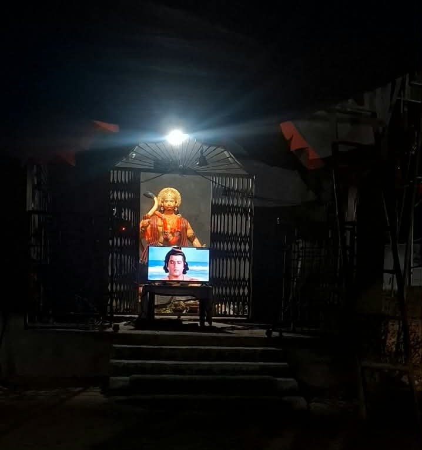

हमारे गाँव की संस्कृति, परंपरा, इतिहास और धार्मिक धरोहर को समर्पित आधिकारिक वेबसाइट।
📸 बारूडीह फोटो गैलरी

हनुमान मंदिर के बारे
हनुमान मंदिर गाँव के प्रमुख धार्मिक स्थलों में से एक है। यह मंदिर गाँव के लोगों की आस्था, श्रद्धा और धार्मिक भावना से गहराई से जुड़ा हुआ है। वर्ष 2006 में इस स्थान पर हनुमान जी की प्रतिमा स्थापित की गई थी। प्रतिमा स्थापित होने के बाद धीरे-धीरे गाँव के लोगों की श्रद्धा और विश्वास इस स्थान के प्रति बढ़ता गया।
समय के साथ ग्रामीणों की इच्छा हुई कि हनुमान जी के इस पवित्र स्थान पर एक सुंदर मंदिर का निर्माण किया जाए। इसी भावना और सामूहिक सहयोग से वर्ष 2018 में यहाँ मंदिर का निर्माण कराया गया। मंदिर के निर्माण के बाद यह स्थान गाँव के लोगों के लिए पूजा-अर्चना और धार्मिक गतिविधियों का प्रमुख केंद्र बन गया।
हनुमान जी को शक्ति, साहस, भक्ति, सेवा और संकट से रक्षा करने वाले देवता के रूप में माना जाता है। इसी विश्वास के कारण गाँव के लोग श्रद्धापूर्वक मंदिर में आते हैं और हनुमान जी की पूजा-अर्चना कर उनका आशीर्वाद प्राप्त करते हैं। विशेष अवसरों पर मंदिर में पूजा-पाठ, आरती, भजन-कीर्तन और प्रसाद वितरण जैसे धार्मिक कार्यक्रम भी आयोजित किए जाते हैं।
मंदिर केवल पूजा करने का स्थान ही नहीं है, बल्कि यह गाँव की आस्था, एकता और भाईचारे का केंद्र भी है। धार्मिक आयोजनों के समय बच्चे, युवा, महिलाएँ और बुजुर्ग सभी मिल-जुलकर भाग लेते हैं। इससे गाँव के लोगों के बीच आपसी प्रेम, सहयोग और एकता की भावना और मजबूत होती है।
2006 में स्थापित हनुमान जी की प्रतिमा और 2018 में निर्मित यह मंदिर आज बारूडीह गाँव की धार्मिक पहचान का एक महत्वपूर्ण हिस्सा है। यहाँ का शांत और भक्तिमय वातावरण श्रद्धालुओं को अपनी ओर आकर्षित करता है और हनुमान जी के प्रति लोगों की आस्था को और मजबूत करता है।
हमारे गाँव का हनुमान मंदिर केवल पूजा-पाठ का स्थान नहीं है, बल्कि यह गाँव के लोगों को एक-दूसरे से जोड़ने वाला आस्था और एकता का केंद्र भी है। धार्मिक कार्यक्रमों और विशेष अवसरों पर गाँव के लोग मिल-जुलकर मंदिर की साफ-सफाई, सजावट तथा आयोजन की व्यवस्था करते हैं। हर व्यक्ति अपनी क्षमता के अनुसार सहयोग करता है।
मंदिर में होने वाले सामूहिक कार्यक्रमों से गाँव के लोगों में आपसी प्रेम, भाईचारा और सहयोग की भावना मजबूत होती है। यहाँ बच्चे अपनी संस्कृति और धार्मिक परंपराओं को करीब से समझते हैं, जबकि बुजुर्ग अपने अनुभवों और पुरानी परंपराओं को नई पीढ़ी तक पहुँचाते हैं। इस प्रकार मंदिर हमारी परंपराओं को एक पीढ़ी से दूसरी पीढ़ी तक पहुँचाने का माध्यम भी बना हुआ है।
मेरे गाँव का हनुमान मंदिर हमारी धार्मिक आस्था, संस्कृति और परंपरा का सुंदर प्रतीक है। मंदिर में प्रवेश करते ही मन में श्रद्धा और शांति का अनुभव होता है। हनुमान जी की भक्ति हमें साहस, सेवा, अनुशासन, निष्ठा और सत्य के मार्ग पर चलने की प्रेरणा देती है।
मंदिर की घंटियों की मधुर आवाज, आरती की पवित्र ध्वनि और भक्तों की श्रद्धा मिलकर यहाँ के वातावरण को भक्तिमय बना देती है। यह वातावरण गाँव की धार्मिक परंपराओं को जीवंत बनाए रखता है।